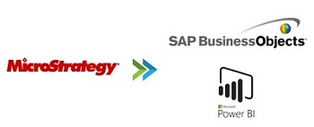

The project consists of activating the SAP ECC Quality Management component and its standard objects in SAP Business Warehouse, to extract, transform and load the quality management and supply data of materials
This was one of the first projects with a direct impact on the operation that was worked on for one of the leading beverage companies in Central America and the Caribbean.
It had to contain all the standard features, from its infoobjects, data sources, transformation rules, infopackages, data transfer process and finally the infosite. The objective of extracting data from the transactional system and bringing it to the Data Warehouse.
Date - October 2016.

The project consists of replicating the management information dashboards built in the Microstrategy business intelligence tool to visualization tools such as Power Bi and SAP Business Objects.
This was one of the most important projects for one of the leading companies in Central America in the commercialization of vehicles and motorcycles, since the end-to-end process was automated, generating very important savings at the operational level and in decision-making The objective of extracting data from the transactional system and bringing it to the Data Warehouse.
When carrying out this project, the best design and modeling practices were used to guarantee the security, integrity and availability of the data, as well as the scalability of the business intelligence tool.
Date - August 2020.
The project consists of activating the component SAP Advanced Planning and Optimization (SAP APO) for the generation of operational strategies based on precise decision making.
This was one of the most important projects for one of the leading companies in Central America in the commercialization of vehicles and motorcycles, since the end-to-end process was automated, generating very important savings at the operational level and in decision-making The objective of extracting data from the transactional system and bringing it to the Data Warehouse.
When carrying out this project, the best design and modeling practices were used to guarantee the security, integrity and availability of the data, as well as the scalability of the business intelligence tool.
Date - August 2020.
" The whole secret of existence is to have no fear." Buddha